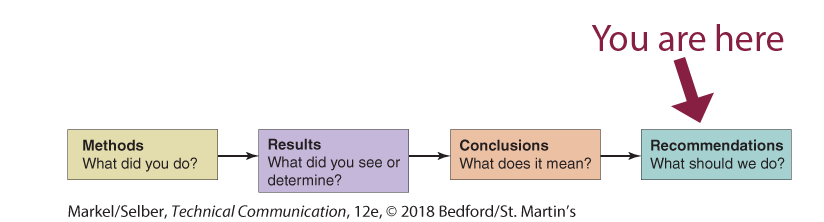

How to analyze your audience and purpose so that you can choose how to present information clearly and effectively. [CLO 1]
How to find and evaluate original, ethical evidence that supports your position through primary and secondary research. [CLO 2 & 3]
How to write documents you may encounter in the workplace (specifically front matter for a report). [CLO 4]
How to use colors, layout, and formatting that make your documents understandable and easy to read. [CLO6]
How to take advantage of design principles, including contrast, repetition, alignment, and proximity, to communicate your ideas effectively. [CLO 7]
What I Want You to Do

The Sections of the Body of the Recommendation Report
Based on your knowledge of the topic and your research, write the Recommendations section of your Recommendation Report.
Why I Want You to Do It
The Recommendations section is where you tell your readers what they should do. I am breaking the report out, section-by-section, to guide you through the process of writing the document and help make sure you include everything that is required for a complete report.
Where You Can Find Help
From Markel & Selber, Chapter 18:
The details on the Recommendations section, from p. 494:
“Recommendations answer the question ‘What should we do?’ . . . [R]ecommendations do not always flow directly from conclusions. Always consider recommending that the organization take no action or no action at this time.”
“Guidelines: Writing Recommendations,” on p. 494.
Example Recommendations section, on p. 525 (part of the sample recommendation report in Figure 18.8).
Suggested Due Date: By 11:59 PM on Friday, April 15, 2022.
Grace Period: The grace period for this activity ends at 11:59 PM on Friday, April 29, 2022.
How You Do It
Complete a draft of your Methods, Results, and Conclusions sections before beginning your Recommendations section. Your recommendations will draw the information from these preceding sections together.
Open the word processor document where you are working on your recommendation report.
Scroll through the outline you created to the location for your Recommendations section.
Tips for Writing Sub-Headings
Use the headings in the Recommendations section of the sample recommendation report in Figure 18.8 of the textbook as a model.
Consult the advice in the “Writing Clear, Informative Headings,” section on pp. 199–202 (in Chapter 9 of the textbook).
Make any changes necessary to the headings for the sub-sections of your Recommendations section:
Choose one of these two options, depending upon your situation:
If you added sub-sections when you created your outline, check your headings to ensure that you have included all the recommendations that you want to make.
If you did not include sub-sections in your outline, add them now, covering all the recommendations that you want to make.
Add any recommendations what came to you as you worked on the other sections of the body.
Review the sub-headings to ensure you focus on what the reader should do. Keep the recommendations manageable. Two or three are probably plenty. In some cases, one may be enough.
Check that the phrasing of the sub-headings in the Recommendations sections repeats keywords and phrases so that a reader can easily tell what parts of the body of the report support your recommendations.
Write the content for the Recommendations section:
Explain your recommendations under each of the sub-headings.
Reread your recommendations, looking for connections to the Methods, Results, and Conclusions sections. The ideas in your Recommendations section should be familiar to people who read the earlier sections..
Work back through the information you have added to make sure you have sentences and clear ideas.
Ensure that any information you quote from your primary or secondary research is enclosed in quotation marks. Examples might be something that someone says in a response to a survey or interview (both primary research) or something stated in an journal article or book (both secondary research).
Add Documentation and Citations anywhere that you include paraphrased information or quotations from outside sources.
Check your draft for (1) Content, (2) Tone, (3) Form, and (4) Location, the four factors in the “Guidelines: Writing Recommendations” ( on p. 494 of the textbook). Consult the textbook for more details.
Review your recommendation section and make any additions or changes, using the information from the textbook and LinkedIn Learning video as needed. At this point, focus in particular in making sure that you have included everything that answers the question, “What should we do?”
Move on to the next part of your report that you want to work on.
How to Assess & Track Your Work
You track and grade your own work in this course. Be sure to complete the following tasks: